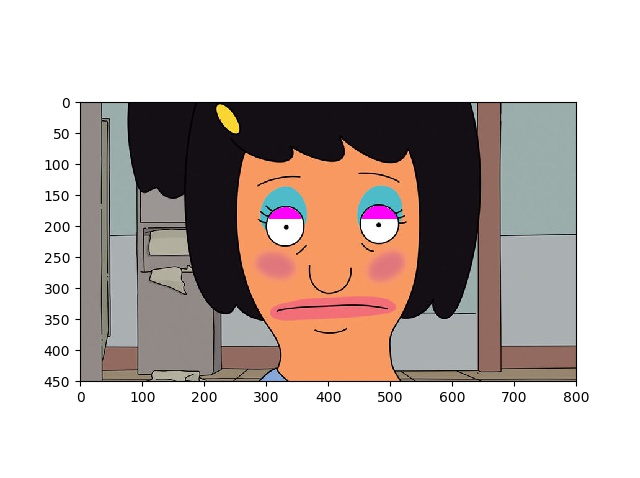
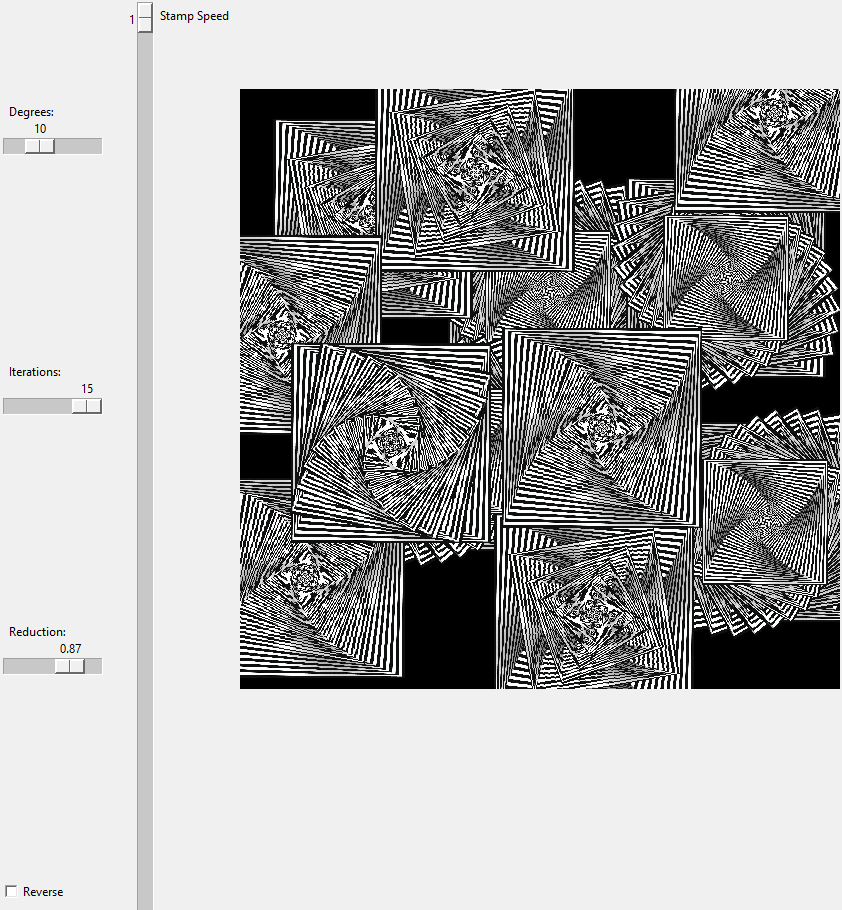
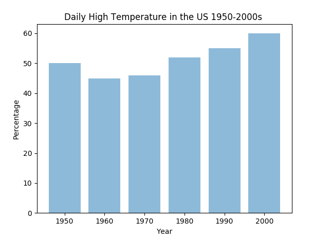
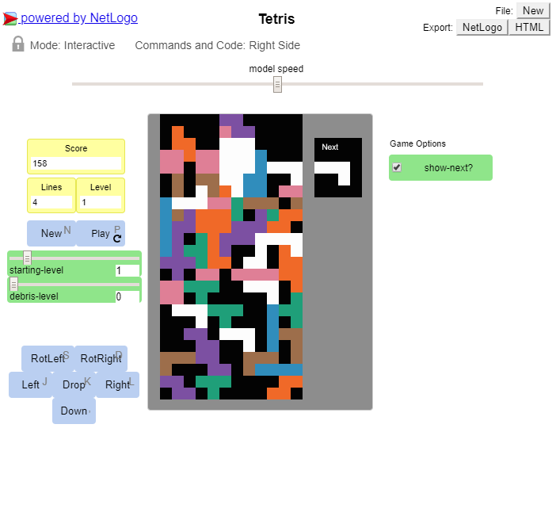

Portfolio
Welcome to my page!
Portfolio
About Me
This is my Portfolio Page!
I will post the stuff I do here.
Potatoes in Space: Scratch Game
MIT App Inventor: GPA Calculator
Continuing the use of of block based code we used mit app inventor to create a GPA and final calculator for an android device.
By entering your grades it will tell you your grade point average and what you will need to get on your finals to maintain your goal.

Interactive Fiction
This is a jungle escape game we made for interactive fiction. After becoming familiar
with basic python commands we used this knowledge to create an interactive story.
The goal of this story, or "game" is to make the right decsions to escape, and to avoid having to restart.

Tic Tac Toe
Using Python through canopy, we made a tic tac toe game with numbers as placeholders and keyboard emoticons instead of "X' and "O" to create a two player game.

Image manipulation - we manipulated this image through canopy
Before

After

GUI - we made a GUI in python

Data analysis - we used python to create a graph of daily high temperatures in the US since the 1950s


Net Logo - we edited the Tetris game through Net Logo to change the color of the blocks and the scoring system
Before


After
